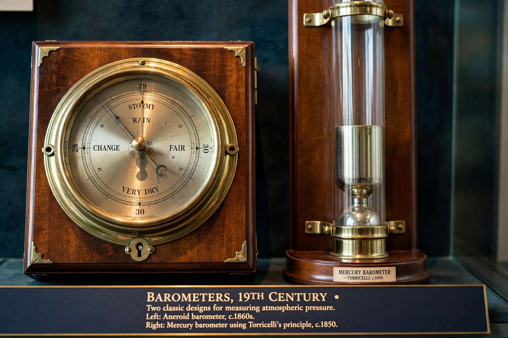

A barometer is a scientific instrument that is used to measure air pressure in a certain environment. Pressure tendency can forecast short-term changes in the weather.

Evangelista Torricelli invented the mercury barometer in 1643. Lucien Vidi invented the aneroid barometer in 1844, using a sealed metal cell that expands and contracts with pressure.
Mercury, aneroid, and electronic barometers are common. Barometers are used in meteorology, altimetry, and by fishermen and sailors as weather indicators.